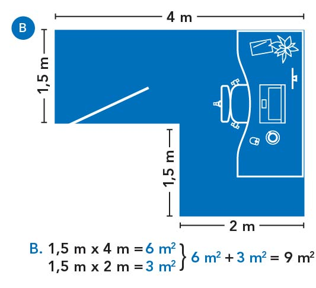

Dépenses de travail à domicile pour les employés
Déterminez votre utilisation de l'espace de travail
Sur cette page
Méthode à taux fixe temporaire
Si vous utilisez la méthode à taux fixe temporaire , vous n'avez pas besoin de déterminer la taille de votre espace de travail pour calculer votre déduction pour les dépenses de bureau à domicile en 2020.
Pour savoir si vous y avez droit, consultez : Critères d'admissibilité - Méthode à taux fixe temporaire.
Plusieurs employés travaillent dans la même maison
Méthode détaillée
Si vous voulez déduire les montants réels que vous avez payés, vous devez utiliser la méthode détaillée . Vous devrez déterminer la taille et l'utilisation (pour le travail et personnelle) de votre espace de travail pour calculer votre déduction pour les dépenses liées à l'espace de travail à domicile.
Pour savoir si vous y avez droit, consultez : Critères d'admissibilité - Méthode détaillée.
Taille de votre domicile et de votre espace de travail
- Taille de votre domicile
-
Toutes les parties finies du domicile sont comptées dans la taille du domicile. Cela inclut :
- les corridors;
- les salles de bain;
- la cuisine.
Vous pouvez mesurer en mètres carrés ou en pieds carrés.
- Taille de votre espace de travail
-
La taille de l'espace dans lequel vous travaillez doit être raisonnable.
Vous pouvez mesurer en mètres carrés ou en pieds carrés.
La formule pour calculer la superficie d'un rectangle ou d'un carré est :
Longueur multiplié par largeurPar exemple :
- 4 m (longueur de la pièce)
- multiplié par 3 m (largeur de la pièce)
- égale 12 m2 (taille totale de la pièce)
Pour calculer une pièce de forme irrégulière, décomposez les dimensions en rectangles et additionnez-les.
Par exemple :
- 4 m (longueur de la 1ère surface)
- multiplié par 1,5 m (largeur de la 1ère surface)
- égale 6 m2 (taille de la 1ère surface)
- 2 m (longueur de la 2e surface)
- multiplié par 1,5 m (largeur de la 2e surface)
- égale 3 m2 (taille de la 2e surface)
- 6 m2 (taille de la 1ère surface)
- plus 3 m2 (taille de la 2e surface)
- égale 9 m2 (taille totale de la pièce)
Si vous avez un aménagement à aire ouverte, vous utiliserez un pourcentage raisonnable de l'espace ouvert comme espace de travail. Vous ne pouvez pas utiliser la totalité de l'espace comme espace de travail.
Par exemple :
- 4 m (longueur de la partie salle à manger)
- multiplié par 3 m (largeur de la partie salle à manger)
- égale 12 m2 (taille totale de la partie salle à manger)
{kind=link}
{kind=link}
{kind=link}
Déterminez le pourcentage de votre domicile que vous utilisez comme espace de travail
Pour calculer le pourcentage de votre domicile que vous utilisez comme espace de travail, utilisez la formule suivante :
La taille de l’espace de travail divisée par la a maison multipliée par 100 égale le % de votre domicile utilisé comme espace de travail.
Exemple : Calcul de base
- 40 m2 (taille de l’espace de travail)
- divisé par 400 m2 (taille du domicile)
- multiplié par 100 (pour le convertir en pourcentage)
- égale 10 % (pourcentage de la maison utilisé comme espace de travail)
Le calculateur fera ce calcul pour vous.
Types d’espaces de travail
Il y a deux types d’espaces de travail :
- aire commune (partagée)
- pièce désignée
Aire commune (partagée) : option 1 de 2
Une aire commune est un espace qui a d'autres utilisations en plus de votre travail (par exemple, travailler à une table de cuisine ou utiliser la salle informatique familiale).
Pièce désignée : option 2 de 2
Une pièce désignée est utilisée uniquement pour votre travail (p. ex., un bureau à domicile).
Nombre d’heures d’utilisation par semaine pour le travail
Le nombre d'heures d'utilisation pour le travail peut affecter le montant des dépenses que vous pouvez déduire et dépend du type d'espace de travail que vous avez : une aire commune (partagée) ou une pièce désignée.
Aire commune (partagée) : option 1 de 2
Votre déduction est basée sur l'utilisation de l'espace dans le cadre de votre emploi et est déterminée selon le nombre d'heures d'utilisation de l'espace pour le travail. Par exemple, si vous travaillez 40 heures par semaine à la table de la cuisine :
- 40 heures (heures travaillées)
- divisé par 168 heures (nombre total d’heures par semaine)
- multiplié par 100 (pour le convertir en pourcentage)
- égale 23,8 % (pourcentage du temps d’utilisation pour le travail)
What if the number of hours they worked changed from week to week
If the expenses are similar each month, the employee can average their working hours to calculate the employment-use amount of their expenses for the total period.
Pièce désignée : option 2 de 2
Votre demande n'est pas affectée par le nombre d'heures que vous utilisez l'espace de travail. Par exemple, si vous travaillez 40 heures par semaine dans la pièce désignée :
- 40 heures (heures travaillées)
- égale 100 % (pourcentage du temps d’utilisation pour le travail)
Exemple : La table de la salle à manger est l’espace de travail
En raison de la pandémie de COVID-19, Sam travaille de la maison à la table de la salle à manger. La salle à manger représente 12 % de la superficie totale de sa maison et elle l’utilise pour travailler 40 heures sur un total de 168 heures par semaine.
Étant donné que la pièce n’est pas utilisée uniquement pour le travail, Sam devra calculer l’utilisation qu’elle fait de cet espace pour travailler.
- 12 % (taille de l’espace de travail par rapport à l’ensemble de la superficie finie de la maison)
- multiplié par 23.8% (40 heures travaillées par semaine divisées par 168 heures par semaine)
- multiplié par 100 (pour le convertir en pourcentage)
- égale 2,8 % (pourcentage de la maison qui est utilisé comme espace de travail)
Si Sam a payé 1 200 $ pour le loyer, l’électricité, le chauffage et l’eau pour la période pendant laquelle elle a travaillé à la maison à cause de la COVID-19, la partie utilisée pour son emploi est de 1 200 $ x 2,8 % = 33,60 $.
Exemple : Le bureau de la maison est l’espace de travail
Chris vit seul dans une maison de 5 chambres. Il y a une pièce désignée (bureau de la maison) où seul Chris fait des tâches liées à son travail.
- 20 m2 (superficie de l’espace de travail de Chris dans la maison)
- divisé par 200 m2 (superficie finie totale de la maison)
- multiplié par 100 (pour le convertir en pourcentage)
- égale 10 % (pourcentage de la maison que Chris utilise comme espace de travail)
Si Chris a payé 1 200 $ pour l’électricité, le chauffage et l’eau pour la période pendant laquelle il a travaillé à la maison à cause de la COVID-19, la partie utilisée pour son emploi est de 1 200 $ x 10 % = 120 $.
Le calculateur fera ce calcul pour vous.
Nombre de travailleurs à la maison
Un employé qui travaille à la maison
Si une seule personne à votre domicile utilise un espace de travail, cette personne réclamera toute l’utilisation, aux fins d’emploi, de cet espace de travail.
Plusieurs employés travaillent dans la même maison
Dans différents espaces de travail
Chaque employé doit calculer l’utilisation, aux fins d’emploi, de l’espace de travail qu’il utilise.
Partage d’une aire de travail commune
Chaque employé doit calculer l’utilisation, aux fins d’emploi, de l’espace de travail qu’il partage.
Exemple : Plusieurs employés partagent une aire de travail commune
Sam et Terry louent une maison de 8 chambres. À cause de la pandémie de COVID-19, ils travaillent de la maison en utilisant la table de leur salle à manger et chacun d’eux utilise la moitié de l’espace. Les deux répondent aux critères d’admissibilité.
- 12 m2 (superficie de la salle à manger)
- multiplié par 50 % (portion de l’espace que chacun utilise)
- égale 6 m2 chacun
- divisé par 100 m2 (superficie aménagée totale de la maison)
- multiplié par 100 (pour le convertir en pourcentage)
- égale 6 % (pourcentage de la maison utilisé pour leur espace de travail)
Sam a travaillé 40 heures par semaine et Terry 25 heures par semaine; les deux à la table de la salle à manger.
Pour Sam
- 6 % (pourcentage de la maison utilisé pour son espace de travail)
- multiplié par 23,8 % (40 heures travaillées divisées par 168 heures totales par semaine)
- multiplié par 100 (pour le convertir en pourcentage)
- égale 1,4 %
Pour Terry
- 6 % (pourcentage de la maison utilisé pour son espace de travail)
- multiplié par 14,9 % (25 heures travaillées divisées par 168 heures totales par semaine)
- multiplié par 100 (pour le convertir en pourcentage)
- égale 0,9 %
Partage d’un espace de travail désigné
Chaque employé doit calculer l’utilisation, aux fins d’emploi, de l’espace de travail qu’il partage.
Exemple : Plusieurs employés partagent un espace de travail désigné
Nneka et Sergio ont travaillé de la maison en raison de la pandémie de COVID-19 et ils ont partagé un bureau désigné dans leur domicile (bureau utilisé seulement pour le travail). Le bureau désigné représente 12 % de la superficie aménagée totale de la maison et chacun d’eux a utilisé 50 % de l’espace pour faire leur travail. Les deux répondent aux critères d’admissibilité.
- 12 m2 (superficie du bureau)
- multiplié par 50 % (portion de l’espace que chacun utilise)
- égale 6 m2 chacun
- divisé par 100 m2 (superficie aménagée totale de la maison)
- multiplié par 100 (pour le convertir en pourcentage)
- égale 6 % (pourcentage de la maison utilisé pour leur espace de travail)
Nneka et Sergio ont un espace de travail désigné, donc le nombre d’heures qu’ils travaillent n’a pas d’incidence sur le calcul.
Changement d’espace de travail
Si votre espace de travail à domicile change ou si vous déménagez, vous devrez peut-être déduire chaque espace de travail séparément. Cela est dû aux changements de taille et de typede l'espace de travail, ou de la superficie finie du domicile.
Exemple : Déménagement
Jean-François a travaillé de la maison à temps plein du 1er avril au 15 juillet 2020, puis est retourné travailler à temps plein au bureau. Pendant ces 15 semaines, il a rempli tous les critères d'admissibilité.
Jean-François a vécu dans le logement A jusqu'au 30 juin 2020 et a déménagé dans le logement B le 1er juillet 2020.
- Calcul 1 : Du 1er avril au 30 juin 2020 (tenez compte des dépenses déductibles payées pendant cette période, du type d'espace de travail, de sa taille et de la superficie totale finie pour le logement A)
- plus Calcul 2 : Du 1er au 15 juillet 2020 (tenez compte des dépenses déductibles payées pendant cette période, du type d'espace de travail, de sa taille et de la superficie totale finie pour le logement B)
- égale Total des dépenses que Jean-François peut déduire en 2020